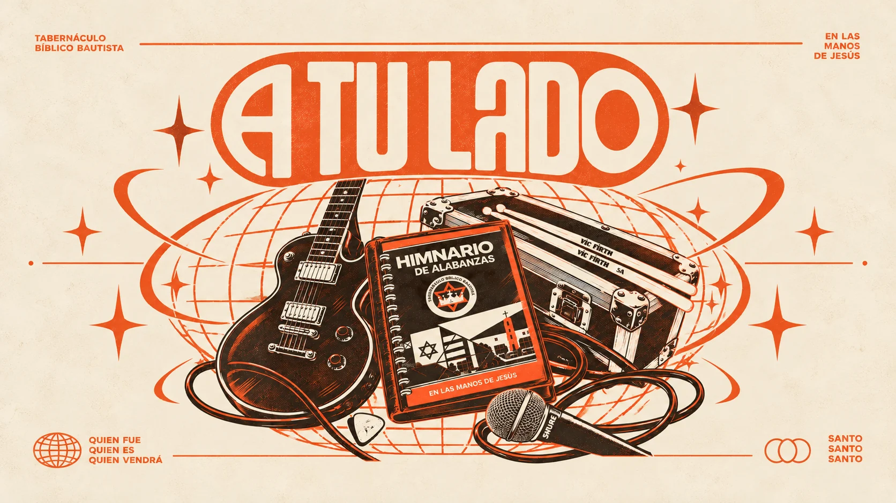
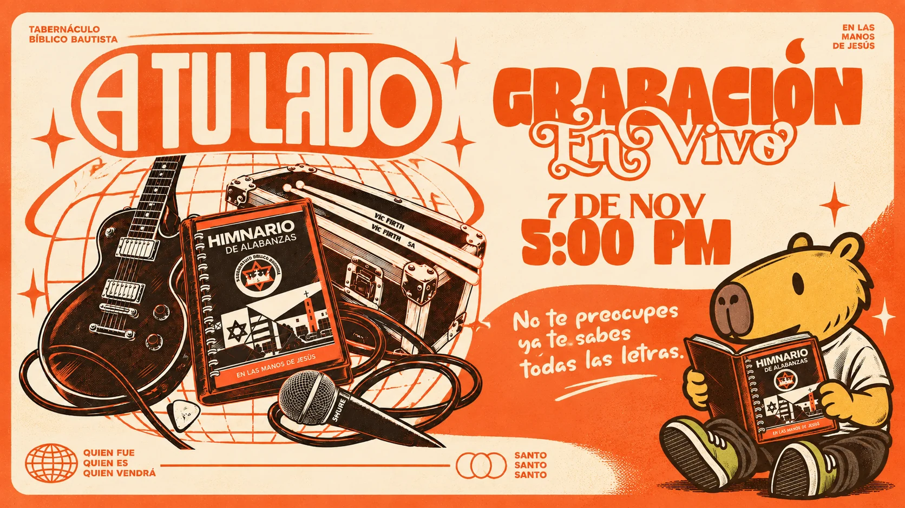

A Tu Lado, segundo álbum de Philly
Grabación en vivo
Un álbum de himnos antiguos en versiones modernas. Todos están invitados.
00Días
00Horas
00Min
00Seg
FechaSábado 7 de noviembre
Hora5:00 PM
LugarTabernáculo Bíblico Bautista, Taber Olocuilta

Los himnos de siempre, como nunca los habías oído
Himnos antiguos.
Himnos antiguos
Los que se han cantado por generaciones. Los que ya te sabes de memoria.
Versiones modernas
Los mismos himnos con el sonido de hoy. Segundo álbum de Philly.
Grabado en vivo
Se graba con la iglesia presente. Tu voz es parte del momento.
No te preocupes, ya te sabes todas las letras.
El arte
Philly saca su segundo álbum

Todos están invitados
Sábado 7 de noviembre, 5:00 PM. Ven con tu familia, tus amigos y tu voz. Pasa la invitación a quien quieras que esté a tu lado.